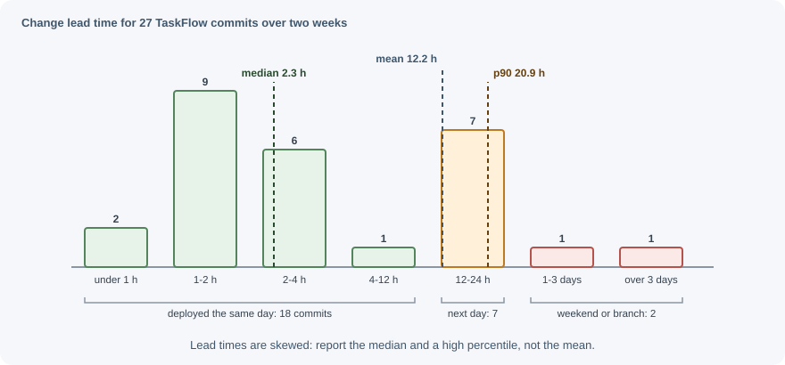

Measuring Delivery Performance¶
Teams argue about whether delivery is "fast" or "stable" until someone measures it. This lesson goes deeper than the introduction to DORA's metrics in continuous integration fundamentals: it covers the current five metrics and how DORA has changed them, the exact timestamps and edge cases needed to compute each one from git, pipeline, and incident data, the benchmarks DORA publishes and how to read them, flow metrics, the SPACE framework, and the ways measurement goes wrong.
The practical examples build a small, working implementation: four tables, a script that exports git history, and SQL that computes lead time, deployment frequency, and the instability metrics for two weeks of TaskFlow API deployments, with the real output of the run.
Why it matters¶
Without measurement, improvement is a matter of opinion: the team that argues most confidently wins. With careless measurement it is worse, because a wrong number looks authoritative. Delivery metrics, done well, answer concrete questions: Did moving to trunk-based development shorten lead time? Did the new canary step reduce failed changes? Is the on-call rotation recovering faster?
DORA describes its software delivery metrics as both leading and lagging indicators: leading indicators for organizational performance and employee well-being, and lagging indicators for software development and delivery practices. That makes them useful for checking whether a practice change worked, and for seeing problems before they show up as missed business goals. The same numbers become harmful the moment they are used to rank teams or set targets, which is why the pitfalls section of this lesson matters as much as the formulas.
Real-world usage¶
- DORA's metrics guide. The software delivery performance metrics guide (updated January 2026) defines five metrics in two groups, throughput and instability, says they "are meant to be applied at the application or service level", and lists pitfalls such as "Setting metrics as a goal" and "Having one metric to rule them all".
- DORA's history of the metrics. Nathen Harvey's A history of DORA's software delivery metrics (January 2026) explains how the original four keys became the current five: mean time to recover was renamed and redefined as failed deployment recovery time in 2023, and deployment rework rate was added in 2024.
- Published performance levels. The 2024 Accelerate State of DevOps Report found four clusters of software delivery performance, with elite performers reporting 127 times faster lead time and 182 times more deployments per year than low performers. The 2025 report, State of AI-assisted Software Development, instead publishes the distribution of answers for each metric and seven team profiles.
- SPACE. Forsgren, Storey, Maddila, Zimmermann, Houck, and Butler's The SPACE of Developer Productivity (ACM Queue, 2021) argues that productivity "cannot be measured by a single metric or dimension". Microsoft's Developer Velocity Lab announcement lists its five dimensions and recommends measuring at least three.
- Flow metrics. Planview's Flow Metrics documentation describes the Flow Framework from Mik Kersten's Project to Product: flow velocity, time, efficiency, load, and distribution across features, defects, risks, and debt.
Popular tools and providers: the DORA Quick Check, source-available tools listed on DORA's resources page (Apache DevLake, Middleware, OpenDORA, and a Backstage DORA plugin), commercial engineering-metrics platforms, and plain SQL over your own pipeline and incident events, as in this lesson.
How it works¶
The five metrics today¶
DORA's guide lists five software delivery performance metrics:
| Factor | Metric | DORA's definition | Typical unit |
|---|---|---|---|
| Throughput | Change lead time | "The amount of time it takes for a change to go from committed to version control to deployed in production." | Hours or days; report the median and a high percentile |
| Throughput | Deployment frequency | "The number of deployments over a given period or the time between deployments." | Deployments per day or week |
| Throughput | Failed deployment recovery time | "The time it takes to recover from a deployment that fails and requires immediate intervention." | Minutes or hours |
| Instability | Change fail rate | "The ratio of deployments that require immediate intervention following a deployment." | Percent of deployments |
| Instability | Deployment rework rate | "The ratio of deployments that are unplanned but happen as a result of an incident in production." | Percent of deployments |
Recovery time sits with throughput because it measures how fast changes of any kind, including fixes, move through the system. The 2024 report explains that change fail rate and rework rate together form a reliable "software delivery stability" factor; DORA's guide now calls the same group instability, so lower is better. You will also see "lead time for changes", "change failure rate", and "rework rate" in DORA's reports; they refer to the same metrics.
What changed, and why¶
| Period | Change | Notes |
|---|---|---|
| 2014 | Research starts with four variables: deployment frequency, lead time for changes, mean time to recover (MTTR), change fail rate | Change fail rate did not correlate with the others, so the first definition of IT performance used three |
| 2015 | Metrics grouped as throughput (deployment frequency, lead time) and stability (MTTR, change fail rate) | The "duality of throughput and stability" |
| 2018 | Availability added; "IT performance" becomes "software delivery and operational (SDO) performance"; the elite cluster appears | The first measure of operational performance joins the delivery metrics |
| 2021 | Availability broadened to reliability | The history article notes that calling reliability the "fifth metric" was inaccurate, because it measures operations, not delivery |
| 2023 | MTTR renamed and redefined as failed deployment recovery time | To separate failures caused by software changes from external failures such as data center outages |
| 2024 | Deployment rework rate added; recovery time grouped with throughput, change fail and rework rates with stability | Change fail rate was long suspected to be a proxy for rework, and the data confirmed the two are related |
| 2025 | Report reorganized around AI-assisted development; distributions per metric and seven team profiles instead of a four-level table | Delivery metrics "tell you what is happening, but they don't explain why" |
The number of clusters has never been fixed in advance. DORA's FAQ notes three clusters before 2018, four from 2018 to 2021, three in 2022, and four again in 2023 and 2024. Treat any "elite" threshold as a snapshot of that year's respondents, not a standard.
Where each timestamp comes from¶
![Diagram: a timeline for one change: commit Monday 09:15, pull request merged 10:50, deploy number 41 at 11:40, alert fires at 12:05, rollback number 42 restores service at 12:15, fix deploy number 43 at 16:30; change lead time runs from the commit to deploy 41, 2 h 25 min, and failed deployment recovery time from deploy 41 to the restore, 35 min, both throughput metrics; deployment frequency counts deploys 41, 42, and 43; change fail rate counts deploy 41 because it needed immediate intervention; deployment rework rate counts deploys 42 and 43 because they were unplanned fixes; commit time comes from git, merge time from the code host, deploy times from the pipeline, and alert and restore times from the alerting system or incident tracker.](../delivery-timestamps.svg)
Each metric needs a precise rule for its start and end. Write the rules down, because every edge case changes the numbers:
- Change lead time starts when the change is committed and ends at the first successful production deployment that contains it. A re-deploy after a rollback does not reset the clock, and staging deploys do not count. Merge strategy matters: squash and rebase merges create new commits whose committer date is the merge time, so the wait for review disappears from the measurement. If review time is part of what you want to improve, start the clock at the first commit of the pull request instead, and say so.
- Deployment frequency counts successful deployments to production for one service, planned or not. A pipeline run that failed before reaching production is not a deployment. Report deployments per week, the share of working days with at least one deployment, or the time between deployments.
- Change fail rate needs a definition of "requires immediate intervention". DORA's 2025 survey describes changes that lead to service impairment or outage and require "a hotfix, rollback, fix forward or patch". Decide whether turning off a feature flag counts, write it down, and link each incident to the deployment that caused it.
- Failed deployment recovery time runs from the failed deployment (or from detection, if you prefer, but be consistent) to the moment service is restored, usually by a rollback, flag change, or fix. Outages that were not caused by a deployment, such as a cloud region failure, belong in your SLOs and incident metrics, not here. That separation is why DORA renamed MTTR.
- Deployment rework rate counts deployments that were not planned but happened because of a production incident: rollbacks, hotfixes, emergency patches. Your deploy tooling needs a way to mark them, such as a required "reason" input on the rollback workflow.
All of this is measured per application or service. Mixing a mobile app that ships monthly through store review with a web API that deploys hourly produces a number that describes neither.
A data model you can trust¶
![Diagram: four tables in a chain: commits with sha and committed_at, loaded from git log; deployment_commits linking a deployment_id to each sha it shipped, built with git rev-list; deployments with id, service, environment, sha, finished_at, status, and an unplanned flag, recorded by the pipeline; incidents with id, deployment_id, detected_at, and restored_at, from incident records; all four feed three queries: lead-time.sql joins the first three tables for the median and 90th percentile, deploy-frequency.sql reads deployments for deploys, deploy days, and the longest gap, and instability.sql joins deployments and incidents for change fail rate, rework rate, and recovery time.](../metrics-data-model.svg)
Store raw events rather than finished numbers. If you keep only "lead time this week: 2.3 hours", you cannot recompute it when you change the definition, fix a bug in the calculation, or want a different percentile. With raw events, every number is a query.
A few rules keep the events trustworthy:
- Record deployments at the source, from the pipeline step that performs them, including failures and rollbacks. Reconstructing them later from chat messages or tickets loses events.
- Use UTC and ISO 8601 everywhere (
2026-10-05T10:20:00Z). SQLite, PostgreSQL, and JavaScript all parse it, including offsets such as+02:00. - Map deployments to commits with git, not by guessing:
git rev-list <previous deployed sha>..<deployed sha>lists exactly the commits a deployment shipped. - Keep your own copy. Vendor histories have retention limits; for example, GitHub retains previous deployment statuses for 90 days.
Distributions, not averages¶

Lead times are heavily skewed: most changes are quick, and a few wait days on a branch or over a weekend. In the sample data used below, the median commit reached production in 2.3 hours while the mean was 12.2 hours, more than five times higher, pulled up by two commits that waited 65 and 96 hours. The 90th percentile, 20.9 hours, tells a different story again: about one change in four or five waits overnight for the next morning's deploy. (The histogram's bins are deliberately unequal, so it shows the minutes-to-days range in one picture.)
Report the median for the typical change and a high percentile (p85 or p90) for the tail you want to shrink. Averages move when one commit sits on a forgotten branch, which says little about the team's normal flow.
Benchmarks as published by DORA¶
The 2024 report's performance levels, from a cluster analysis of the original four metrics (rework rate was not part of the clustering):
| Performance level | Change lead time | Deployment frequency | Change fail rate | Failed deployment recovery time | Share of respondents |
|---|---|---|---|---|---|
| Elite | Less than one day | On demand (multiple deploys per day) | 5% | Less than one hour | 19% |
| High | Between one day and one week | Between once per day and once per week | 20% | Less than one day | 22% |
| Medium | Between one week and one month | Between once per week and once per month | 10% | Less than one day | 35% |
| Low | Between one month and six months | Between once per month and once every six months | 40% | Between one week and one month | 25% |
Two details are easy to miss. The medium cluster has a lower change fail rate than the high cluster: DORA chose to call faster teams "high" and slower but more stable teams "medium", and notes there may be no universal answer to which is better. And the report's own advice is that "the best teams are those that achieve elite improvement, not necessarily elite performance."
The 2025 report replaced the four-level table with the distribution of survey answers for each metric ("How do you compare?"). Reading off where the middle respondent falls:
| Metric | Typical (median) respondent | Best answer offered, and share choosing it |
|---|---|---|
| Change lead time | Between one day and one week | Less than one hour: 9.4% (less than one day: 24.4% in total) |
| Deployment frequency | Between once per week and once per month | On demand, multiple deploys per day: 16.2% |
| Failed deployment recovery time | Less than one day | Less than one hour: 21.3% (less than one day: 56.5% in total) |
| Change fail rate | 8% to 16% | 0% to 2%: 8.5% |
| Deployment rework rate | 8% to 16% | 0% to 2%: 6.9% |
These are self-reported survey answers about each respondent's primary application. Use them for orientation, then compare your service with its own past, which is the comparison DORA recommends.
Flow metrics¶
DORA's metrics start at commit. Much of the waiting happens earlier: in backlogs, design, and review. The Flow Framework measures the whole value stream, from when work starts to when it is complete, using flow items of four types: features, defects, risks, and debt. Planview's documentation defines the metrics:
| Flow metric | Definition (Planview) | Question it answers |
|---|---|---|
| Flow velocity | Number of flow items of each type completed over a period (throughput) | Is value delivery accelerating? |
| Flow time | Time from "work start" to "work complete", active and waiting | Is time to value getting shorter? |
| Flow efficiency | Active time as a share of total flow time | How much of the time is work actually progressing? |
| Flow load | Number of flow items in progress, active or waiting (WIP) | Is demand outweighing capacity? |
| Flow distribution | Ratio of the four flow item types completed in a period | Are features crowding out defects, risk, and debt? |
Flow load and flow time are linked by Little's law, as shown in What is DevOps: more work in progress at the same throughput means longer flow time. Flow distribution catches a pattern DORA metrics miss: a team can deploy often and fast while spending nothing on debt and risk, until it cannot.
SPACE: productivity has more than one dimension¶
The SPACE framework names five dimensions of developer productivity: satisfaction and well-being, performance, activity, communication and collaboration, and efficiency and flow. Microsoft's announcement recommends including measures from at least three of them. Combine what people report in surveys with what systems record, since each sees things the other misses. The examples below are illustrative choices for the TaskFlow team, not a list from the paper:
| Dimension | Example measures | What it guards against |
|---|---|---|
| Satisfaction and well-being | Quarterly survey: satisfaction with tools and process, burnout risk | Shipping faster by exhausting people |
| Performance | SLO compliance, change fail rate, customer-reported defects | Activity that produces no good outcomes |
| Activity | Deployments, pull requests merged, incidents handled | Invisible work; meaningless alone |
| Communication and collaboration | Review turnaround time, onboarding time, findability of documentation | Fast individuals, slow team |
| Efficiency and flow | Change lead time, flow efficiency, interruptions per day | Hidden waiting and constant context switching |
DORA's article Choosing measurement frameworks compares SPACE, DevEx, HEART, and DORA's metrics, and distinguishes self-reported data (surveys, interviews) from logs-based data (counts, durations, frequencies), warning that it is "a common misconception that logs-based metrics are objective."
Pitfalls: Goodhart's law and gaming¶
Economist Charles Goodhart observed in 1975 that a statistical regularity tends to collapse once it is used for control; the popular phrasing, usually credited to Marilyn Strathern, is "When a measure becomes a target, it ceases to be a good measure." DORA's guide cites Goodhart's law in the first of its listed pitfalls:
- "Setting metrics as a goal", for example "Every application must deploy multiple times per day by year's end".
- "Having one metric to rule them all", instead of several metrics "with a healthy amount of tension between them".
- "Using industry as a shield against improving."
- "Making disparate comparisons" between very different applications.
- "Having siloed ownership", with each team owning one metric.
- "Competing" against other teams instead of improving over time.
- "Focusing on measurement at the expense of improvement."
Typical ways each metric gets gamed, and what exposes it:
| Metric | How it gets gamed | Counter-signal |
|---|---|---|
| Deployment frequency | Deploying unchanged code, splitting one change into many deploys | Lead time and commits per deploy |
| Change lead time | Squash-merging to hide review time, measuring from merge | Pull request age, flow time |
| Change fail rate | Not linking incidents to deployments, renaming rollbacks "maintenance" | Incident records, rework rate, SLO burn |
| Recovery time | Closing incidents before users are really unaffected | SLO error budget, customer reports |
| Any of them | Ranking teams, so people hide problems | Blameless reviews, trends per service |
When to use and when not to use¶
| Situation | Approach |
|---|---|
| A team wants to know if a process change helped | DORA metrics for its service, as a trend before and after |
| No data or tooling yet | Start with a conversation and the DORA Quick Check, not a data platform |
| Delivery looks fast but users wait months for features | Add flow metrics from work start, and a value stream map |
| Leadership asks "how productive are developers?" | SPACE-style mix of at least three dimensions, including surveys |
| Comparing teams for performance reviews or bonuses | Do not; it invites gaming and hides problems |
| A service deploys a few times a year by design (firmware, regulated device) | Use lead time and change fail rate per release; frequency is not a goal |
| Many services in a monorepo | Compute per deployable service, mapping commits by path (see monorepo builds and deployments) |
Practical examples¶
Record every deployment at the source¶
The deploy job sends one event per attempt, success or failure, to the team's metrics store (any database or HTTP endpoint you control):
# .github/workflows/deliver.yml (excerpt): record every production deployment
jobs:
deploy:
runs-on: ubuntu-latest
environment: production
steps:
- uses: actions/checkout@v7
- run: ./scripts/deploy.sh "$GITHUB_SHA"
- name: Record the deployment
if: always() # record failed attempts too
env:
METRICS_TOKEN: ${{ secrets.METRICS_TOKEN }}
JOB_STATUS: ${{ job.status }}
run: |
status=failed
if [ "$JOB_STATUS" = "success" ]; then status=success; fi
curl -fsS -X POST https://metrics.example.com/api/deployments \
-H "Authorization: Bearer $METRICS_TOKEN" \
-H "Content-Type: application/json" \
-d "{\"service\":\"taskflow-api\",\"environment\":\"production\",\"sha\":\"$GITHUB_SHA\",\"status\":\"$status\",\"finished_at\":\"$(date -u +%Y-%m-%dT%H:%M:%SZ)\"}"
job.status is success, failure, or cancelled at that point in
the job, and if: always() makes the step run even after a failed
deploy. The rollback and hotfix workflows send the same event with an
extra "unplanned": 1, which is what the rework rate counts. Export the
events as deployments.csv with the columns of the deployments table.
Export commits and deployment ranges from git¶
#!/usr/bin/env bash
# scripts/export-dora.sh: turn git history and a deployment log into CSV files
# Input: deployments.csv (id,service,environment,sha,finished_at,status,unplanned), oldest first
set -euo pipefail
echo "sha,committed_at" > commits.csv
git log --format='%H,%cI' main >> commits.csv
echo "deployment_id,sha" > deployment_commits.csv
prev=""
while IFS=, read -r id service environment sha finished_at status unplanned; do
[ "$environment" = "production" ] && [ "$status" = "success" ] || continue
if [ -n "$prev" ]; then
# commits reachable from this deploy but not from the previous one
git rev-list "$prev..$sha" | sed "s/^/$id,/" >> deployment_commits.csv
fi
prev="$sha"
done < <(tail -n +2 deployments.csv)
%cI prints the committer date in strict ISO 8601 with its offset. The
first deployment in the file has no previous one, so start the export
from a known baseline. After a rollback, the next range includes
commits that were already deployed once; the lead time query handles
that by taking each commit's first successful deployment.
Create the tables and load the data¶
-- schema.sql: delivery events for one service (SQLite)
CREATE TABLE commits (
sha TEXT PRIMARY KEY,
committed_at TEXT NOT NULL -- ISO 8601, for example 2026-10-05T09:15:00Z
);
CREATE TABLE deployments (
id INTEGER PRIMARY KEY,
service TEXT NOT NULL,
environment TEXT NOT NULL, -- 'staging' or 'production'
sha TEXT NOT NULL, -- the commit that was deployed
finished_at TEXT NOT NULL, -- when the deployment completed
status TEXT NOT NULL CHECK (status IN ('success', 'failed')),
unplanned INTEGER NOT NULL DEFAULT 0 -- 1 = rollback or hotfix for an incident
);
-- Every commit a deployment shipped: git log <previous deployed sha>..<sha>
CREATE TABLE deployment_commits (
deployment_id INTEGER NOT NULL REFERENCES deployments(id),
sha TEXT NOT NULL REFERENCES commits(sha),
PRIMARY KEY (deployment_id, sha)
);
-- Production incidents caused by a deployment
CREATE TABLE incidents (
id INTEGER PRIMARY KEY,
deployment_id INTEGER NOT NULL REFERENCES deployments(id),
detected_at TEXT NOT NULL,
restored_at TEXT NOT NULL
);
sqlite3 dora.db < schema.sql
sqlite3 dora.db ".import --csv --skip 1 commits.csv commits"
sqlite3 dora.db ".import --csv --skip 1 deployments.csv deployments"
sqlite3 dora.db ".import --csv --skip 1 deployment_commits.csv deployment_commits"
The results below come from two weeks of sample TaskFlow API data: 18 production deployment attempts (one failed in the pipeline), 27 commits, a rollback on 7 October, and a hotfix on 15 October.
sample-data.sql: the two weeks of sample data used below
-- sample-data.sql: two weeks of TaskFlow API production deployments (UTC)
INSERT INTO commits (sha, committed_at) VALUES
('c01', '2026-10-02T16:40:00Z'), ('c02', '2026-10-05T09:15:00Z'),
('c03', '2026-10-05T11:30:00Z'), ('c04', '2026-10-05T13:50:00Z'),
('c05', '2026-10-06T09:40:00Z'), ('c06', '2026-10-06T16:20:00Z'),
('c07', '2026-10-07T09:05:00Z'), ('c08', '2026-10-07T14:10:00Z'),
('c09', '2026-10-07T17:45:00Z'), ('c10', '2026-10-08T10:05:00Z'),
('c11', '2026-10-08T12:30:00Z'), ('c12', '2026-10-08T15:20:00Z'),
('c13', '2026-10-09T13:35:00Z'), ('c14', '2026-10-09T15:25:00Z'),
('c15', '2026-10-08T11:00:00Z'), ('c16', '2026-10-12T09:30:00Z'),
('c17', '2026-10-12T15:10:00Z'), ('c18', '2026-10-13T08:55:00Z'),
('c19', '2026-10-13T13:20:00Z'), ('c20', '2026-10-14T09:10:00Z'),
('c21', '2026-10-14T10:05:00Z'), ('c22', '2026-10-14T16:40:00Z'),
('c23', '2026-10-15T11:35:00Z'), ('c24', '2026-10-15T14:00:00Z'),
('c25', '2026-10-15T17:10:00Z'), ('c26', '2026-10-16T09:20:00Z'),
('c27', '2026-10-16T13:05:00Z');
INSERT INTO deployments (id, service, environment, sha, finished_at, status, unplanned) VALUES
(1, 'taskflow-api', 'production', 'c02', '2026-10-05T10:20:00Z', 'success', 0),
(2, 'taskflow-api', 'production', 'c04', '2026-10-05T15:05:00Z', 'success', 0),
(3, 'taskflow-api', 'production', 'c05', '2026-10-06T11:10:00Z', 'success', 0),
(4, 'taskflow-api', 'production', 'c07', '2026-10-07T10:45:00Z', 'success', 0),
(5, 'taskflow-api', 'production', 'c05', '2026-10-07T11:20:00Z', 'success', 1),
(6, 'taskflow-api', 'production', 'c08', '2026-10-07T16:30:00Z', 'success', 0),
(7, 'taskflow-api', 'production', 'c11', '2026-10-08T14:40:00Z', 'success', 0),
(8, 'taskflow-api', 'production', 'c12', '2026-10-09T10:15:00Z', 'success', 0),
(9, 'taskflow-api', 'production', 'c13', '2026-10-09T15:00:00Z', 'failed', 0),
(10, 'taskflow-api', 'production', 'c14', '2026-10-09T16:10:00Z', 'success', 0),
(11, 'taskflow-api', 'production', 'c16', '2026-10-12T11:00:00Z', 'success', 0),
(12, 'taskflow-api', 'production', 'c18', '2026-10-13T10:30:00Z', 'success', 0),
(13, 'taskflow-api', 'production', 'c19', '2026-10-13T15:45:00Z', 'success', 0),
(14, 'taskflow-api', 'production', 'c21', '2026-10-14T11:25:00Z', 'success', 0),
(15, 'taskflow-api', 'production', 'c22', '2026-10-15T10:05:00Z', 'success', 0),
(16, 'taskflow-api', 'production', 'c23', '2026-10-15T12:10:00Z', 'success', 1),
(17, 'taskflow-api', 'production', 'c26', '2026-10-16T10:40:00Z', 'success', 0),
(18, 'taskflow-api', 'production', 'c27', '2026-10-16T14:30:00Z', 'success', 0);
-- Deployment 5 is a rollback (no new commits); 6 re-ships c06 and c07 with a fix;
-- 9 failed in the pipeline, so 10 ships c13 again.
INSERT INTO deployment_commits (deployment_id, sha) VALUES
(1, 'c01'), (1, 'c02'), (2, 'c03'), (2, 'c04'), (3, 'c05'),
(4, 'c06'), (4, 'c07'), (6, 'c06'), (6, 'c07'), (6, 'c08'),
(7, 'c09'), (7, 'c10'), (7, 'c11'), (8, 'c12'), (9, 'c13'),
(10, 'c13'), (10, 'c14'), (11, 'c15'), (11, 'c16'), (12, 'c17'),
(12, 'c18'), (13, 'c19'), (14, 'c20'), (14, 'c21'), (15, 'c22'),
(16, 'c23'), (17, 'c24'), (17, 'c25'), (17, 'c26'), (18, 'c27');
INSERT INTO incidents (id, deployment_id, detected_at, restored_at) VALUES
(1, 4, '2026-10-07T10:52:00Z', '2026-10-07T11:20:00Z'),
(2, 15, '2026-10-15T10:30:00Z', '2026-10-15T12:10:00Z');
Change lead time per week¶
-- lead-time.sql: change lead time per week, median and 90th percentile
WITH first_deploy AS (
-- A commit counts as deployed the first time a successful production
-- deployment ships it; later re-deploys (after a rollback) do not reset it.
SELECT dc.sha, MIN(julianday(d.finished_at)) AS deployed_jd
FROM deployment_commits dc
JOIN deployments d ON d.id = dc.deployment_id
WHERE d.environment = 'production' AND d.status = 'success'
GROUP BY dc.sha
),
lead AS (
SELECT date(f.deployed_jd, 'weekday 0', '-6 days') AS week_of, -- Monday
ROUND((f.deployed_jd - julianday(c.committed_at)) * 1440) AS minutes
FROM first_deploy f
JOIN commits c ON c.sha = f.sha
),
ranked AS (
SELECT week_of, minutes,
ROW_NUMBER() OVER (PARTITION BY week_of ORDER BY minutes) AS rn,
COUNT(*) OVER (PARTITION BY week_of) AS n
FROM lead
)
SELECT week_of,
n AS changes,
ROUND(AVG(CASE WHEN rn IN ((n + 1) / 2, (n + 2) / 2) THEN minutes END) / 60.0, 1) AS median_h,
ROUND(MAX(CASE WHEN rn <= (9 * n + 9) / 10 THEN minutes END) / 60.0, 1) AS p90_h,
ROUND(AVG(minutes) / 60.0, 1) AS mean_h
FROM ranked
GROUP BY week_of, n
ORDER BY week_of;
$ sqlite3 -header -column dora.db < lead-time.sql
week_of changes median_h p90_h mean_h
---------- ------- -------- ----- ------
2026-10-05 14 2.5 20.9 10.4
2026-10-12 13 2.3 20.7 14.1
How it works: first_deploy takes each commit's earliest successful
production deployment, so c06 and c07 count from deployment 4, not from
the re-deploy after the rollback. The modifier pair 'weekday 0', '-6
days' moves any date to the Monday of its week. The median averages the
middle one or two rows; (9 * n + 9) / 10 is integer arithmetic for the
nearest-rank 90th percentile, ceil(0.9 × n), without needing SQLite's
optional math functions. In PostgreSQL,
percentile_cont(0.5) WITHIN GROUP (ORDER BY minutes) gives the same
median and percentile_disc(0.9) WITHIN GROUP (ORDER BY minutes) the
same nearest-rank 90th percentile.
Reading it: the median is stable at about two and a half hours, but the mean jumped from 10.4 to 14.1 hours in the second week because of one commit that waited four days on a branch. The p90 of about 21 hours says the slowest changes regularly wait overnight; a team that wants to improve should look at why afternoon merges are not deployed the same day.
Deployment frequency per week¶
-- deploy-frequency.sql: successful production deployments per week
WITH prod AS (
SELECT finished_at, unplanned,
date(finished_at, 'weekday 0', '-6 days') AS week_of,
(julianday(finished_at)
- julianday(LAG(finished_at) OVER (ORDER BY finished_at))) * 24 AS gap_h
FROM deployments
WHERE environment = 'production' AND status = 'success'
)
SELECT week_of,
COUNT(*) AS deploys,
COUNT(DISTINCT date(finished_at)) AS deploy_days,
ROUND(COUNT(*) / 5.0, 1) AS per_workday,
SUM(unplanned) AS unplanned,
ROUND(MAX(gap_h), 1) AS longest_gap_h
FROM prod
GROUP BY week_of
ORDER BY week_of;
$ sqlite3 -header -column dora.db < deploy-frequency.sql
week_of deploys deploy_days per_workday unplanned longest_gap_h
---------- ------- ----------- ----------- --------- -------------
2026-10-05 9 5 1.8 1 23.6
2026-10-12 8 5 1.6 1 66.8
The failed pipeline run (deployment 9) is excluded, while the rollback and the hotfix count: they are real production deployments. Deploy days (5 of 5 working days) is a useful second view, because it shows whether deployment is routine or bunched. The 66.8-hour longest gap is the weekend; the 23.6-hour gap in the first week runs from Tuesday's 11:10 deploy to Wednesday's 10:45 deploy.
Change fail rate, rework rate, and recovery time¶
-- instability.sql: change fail rate, rework rate, failed deployment recovery time
WITH prod AS (
SELECT id, finished_at, unplanned
FROM deployments
WHERE environment = 'production' AND status = 'success'
),
failed AS (
SELECT p.id,
MAX(julianday(i.restored_at) - julianday(p.finished_at)) * 1440 AS recovery_min
FROM prod p
JOIN incidents i ON i.deployment_id = p.id
GROUP BY p.id
)
SELECT (SELECT COUNT(*) FROM prod) AS deploys,
(SELECT COUNT(*) FROM failed) AS failed_changes,
ROUND(100.0 * (SELECT COUNT(*) FROM failed)
/ (SELECT COUNT(*) FROM prod), 1) AS change_fail_pct,
ROUND(100.0 * (SELECT SUM(unplanned) FROM prod)
/ (SELECT COUNT(*) FROM prod), 1) AS rework_pct,
(SELECT ROUND(AVG(recovery_min)) FROM failed) AS mean_recovery_min;
$ sqlite3 -header -column dora.db < instability.sql
deploys failed_changes change_fail_pct rework_pct mean_recovery_min
------- -------------- --------------- ---------- -----------------
17 2 11.8 11.8 80.0
Two of 17 deployments needed immediate intervention (11.8%), and two
deployments were unplanned fixes (also 11.8%, a coincidence in this
sample). Recovery took 35 minutes for the rollback and 125 minutes for
the hotfix, a mean of 80 minutes; with so few failures, list them
individually rather than trusting any average. These SQL files run
unchanged with the sqlite3 command-line shell and with Python's built-in
sqlite3 module.
Best practices¶
- Measure one service at a time, as trends, and look at throughput and instability together.
- Write down the definition of every start and end timestamp, including how rollbacks, flags, and squash merges are handled.
- Record events automatically at the source: commits from git, deployments from the pipeline, incidents from the incident tool.
- Keep raw events in your own store, in UTC, so numbers can be recomputed.
- Report medians and a high percentile, never only averages.
- Add flow metrics and surveys when the question goes beyond "commit to production".
- Use metrics to choose and check experiments; never set them as targets or compare unlike teams.
- Start small: a conversation and the DORA Quick Check can be enough to pick the first improvement.
In production¶
- Lead time looks excellent, but features still take months. Detect: change lead time is a few hours while product managers report long waits; pull requests stay open for days. Cause: the clock starts at the squash-merge commit, and most waiting happens before commit. Fix: measure from the pull request's first commit as well, add flow time from work start, and map the value stream.
- Deployment frequency doubled right after leadership set a target. Detect: many deployments ship no new commits, and commits per deploy fell to zero. Cause: Goodhart's law: the number became the goal. Fix: withdraw the target, track deploys together with lead time and commits per deploy, and discuss trends with the team instead of ranking it.
- The DORA dashboard lost last year's data. Detect: history before a certain date is empty or shows no failures. Cause: metrics were computed from a vendor API with limited retention; GitHub, for instance, keeps previous deployment statuses for 90 days. Fix: export events nightly into your own database and compute everything from there.
- Change fail rate is 0% while incidents keep happening. Detect: the incident tracker shows deploy-related incidents, yet no deployment is marked failed. Cause: incidents are not linked to the deployment that caused them. Fix: add a required "triggering deployment" field to incident records and a reason input on rollback workflows.
- Every service in the monorepo shows the same deployment frequency. Detect: identical numbers for unrelated services. Cause: each deploy of the repository is counted for every service. Fix: record the service on each deployment event and map commits to services by path.
- Recovery times jumped after a cloud outage. Detect: one incident of several hours dominates the month's recovery time. Cause: an outage that was not caused by a deployment was counted as a failed deployment. Fix: keep only deployment-caused failures in this metric, which is the point of DORA's 2023 rename, and track the outage against the SLO instead.
Important terminology¶
- Change lead time: Time from commit to that change running in production.
- Deployment frequency: Number of production deployments in a period, or the time between them.
- Failed deployment recovery time: Time to recover from a deployment that needed immediate intervention.
- Change fail rate: Share of deployments that needed immediate intervention.
- Deployment rework rate: Share of deployments that were unplanned fixes for production incidents.
- Throughput / instability: DORA's two groupings of the five metrics.
- Performance cluster: A group of survey respondents with similar metric values, found by cluster analysis.
- Median / p90: The middle value, and the value 90% of observations fall below.
- Flow item: A unit of work in the Flow Framework: feature, defect, risk, or debt.
- Flow time / flow load / flow efficiency: Start-to-finish time, work in progress, and the active share of flow time.
- SPACE: Satisfaction and well-being, performance, activity, communication and collaboration, efficiency and flow.
- Goodhart's law: A measure used as a target stops being a good measure.
Common mistakes and misconceptions¶
- Using DORA metrics to rank teams or individuals.
- Averaging lead times instead of reporting the median and a percentile.
- Counting staging deployments or failed pipeline runs as deployments.
- Starting lead time at merge without saying so, after squash merges.
- Counting outages unrelated to deployments as failed deployments.
- Treating the 2024 "elite" thresholds as a permanent standard.
- Believing system data is objective while surveys are not; both need care.
- Measuring only activity (commits, pull requests) and calling it productivity.
- Building a large metrics platform before having the first improvement conversation.
Revision questions¶
- Name DORA's five software delivery metrics, their two groupings, and what changed in 2023 and 2024.
- Why does failed deployment recovery time exclude a data center outage that no deployment caused?
- How do squash merges affect a lead time measured from commit timestamps, and how would you correct for it?
- A service had 40 production deployments in a month; 3 needed a rollback or hotfix, recovering in 20, 40, and 90 minutes; 5 deployments were unplanned fixes. Compute the change fail rate, mean recovery time, and rework rate. (7.5%; 50 minutes; 12.5%.)
- Seven lead times in hours are 1, 1, 2, 2, 3, 20, and 70. Compute the mean, the median, and the nearest-rank 90th percentile. Which would you report? (Mean 14.1; median 2; p90 is rank ceil(6.3) = 7, so 70. Report the median and the p90.)
- In the 2024 performance levels, why is the medium cluster's change fail rate lower than the high cluster's, and what does DORA advise about chasing "elite"?
- Name the five flow metrics and the four flow item types. What does flow distribution reveal that DORA metrics do not?
- Your director wants every team to reach "multiple deployments per day" by year end. What do you recommend instead, and why?
Further learning¶
- DORA: Software delivery performance metrics
- DORA: A history of DORA's software delivery metrics
- DORA: 2024 Accelerate State of DevOps Report
- DORA: Choosing measurement frameworks to fit your organizational goals
- The SPACE of Developer Productivity (Microsoft Research)
- SQLite: Date and time functions and window functions
- Next: team practices and ownership. Back to the DevOps fundamentals overview.